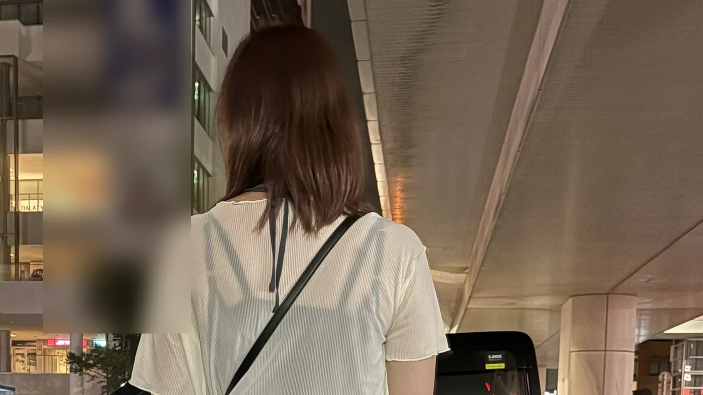
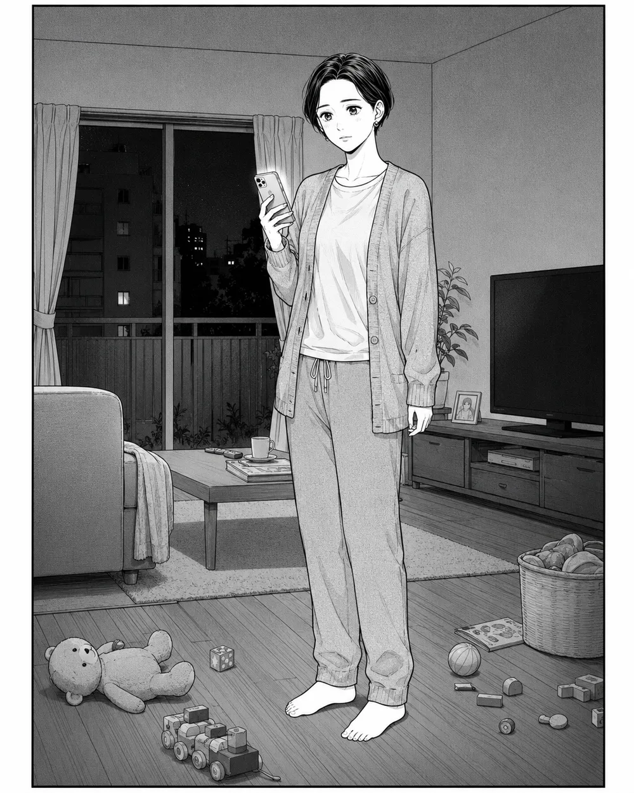
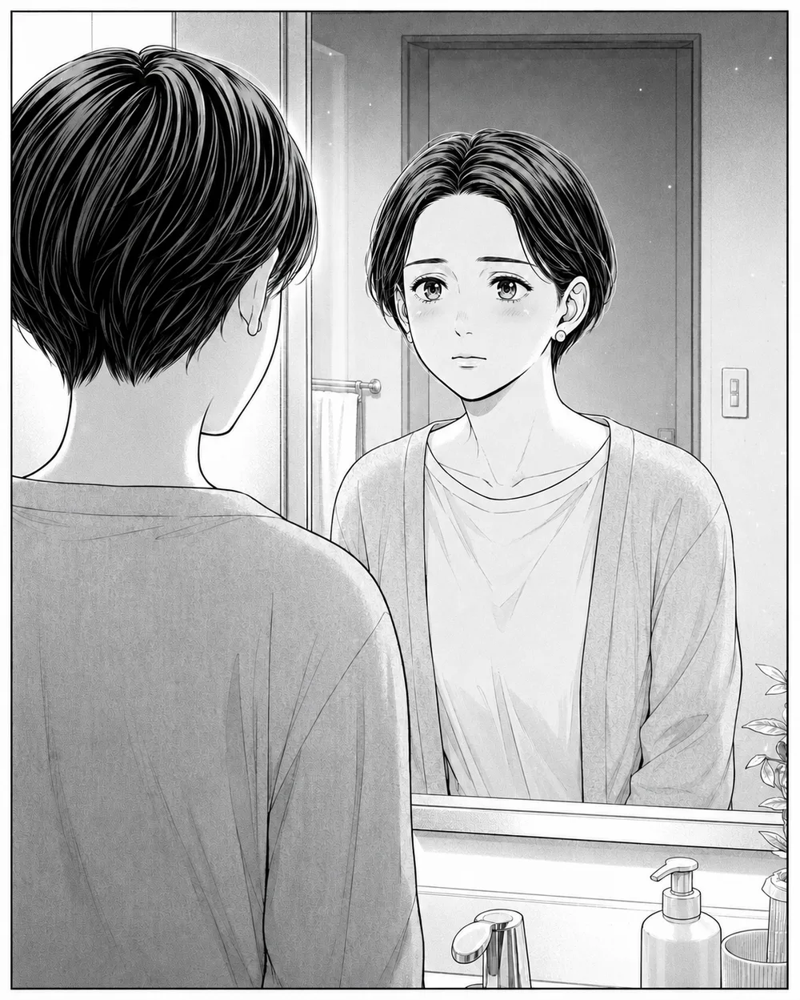
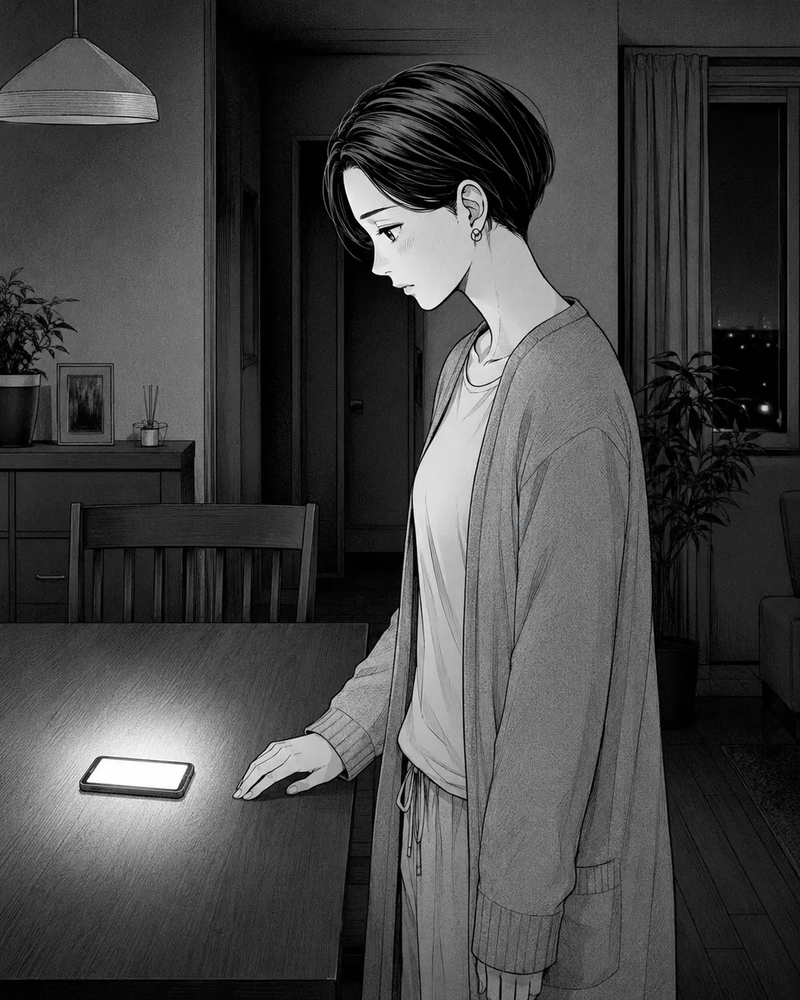
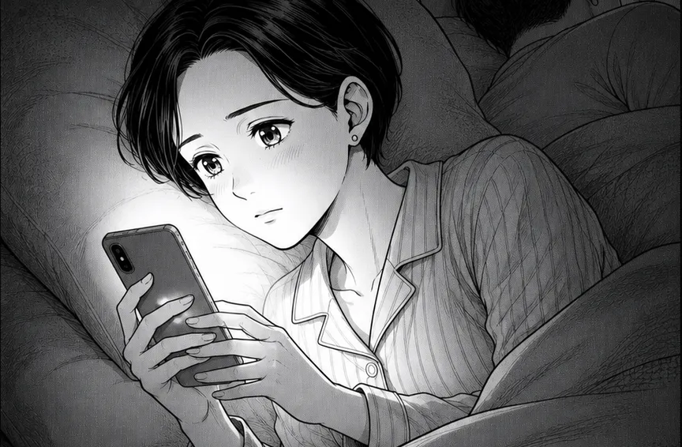
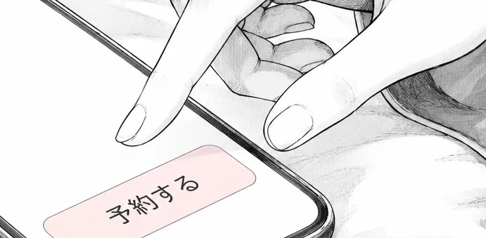
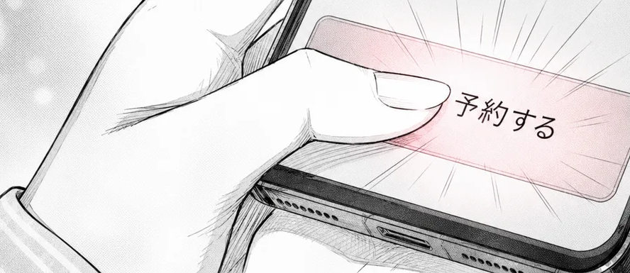
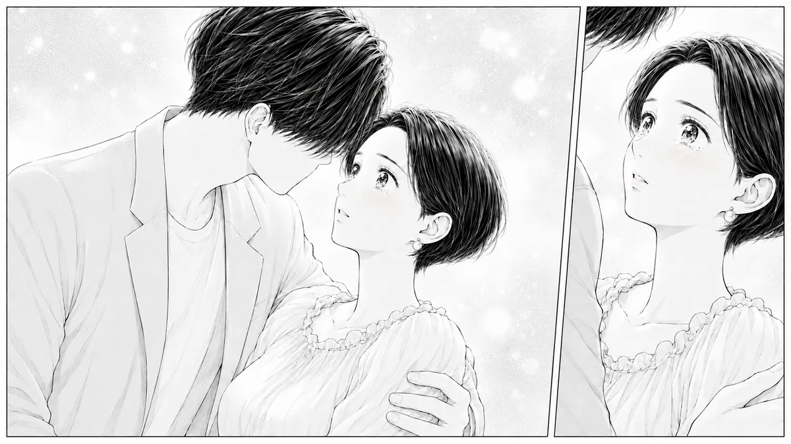
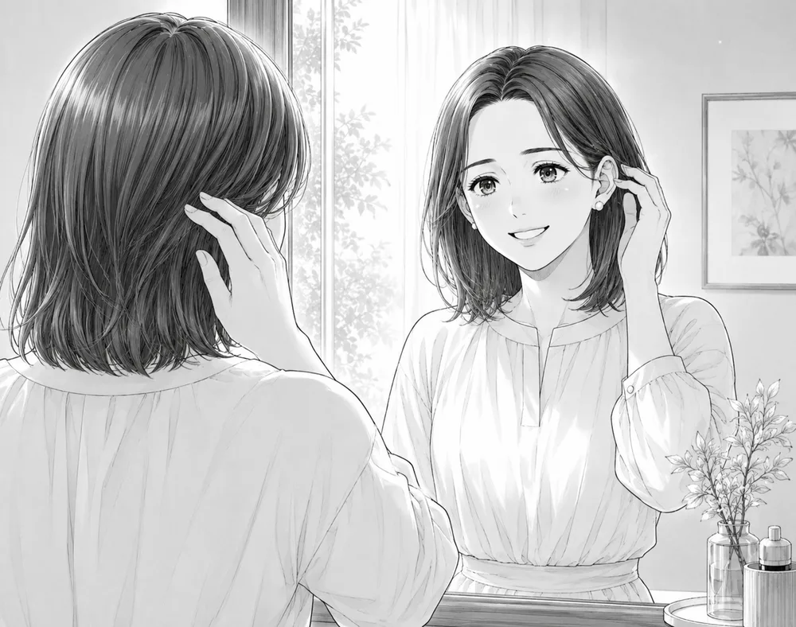

夫はいる。子どももいる。
それなのに、鏡を見ると、そこにいるのは「お母さん」の顔ばかり——。
私が女性用風俗の予約ボタンを押せたのは、その言葉を知ってから半年以上あとでした。
今でも、なんで押せたのか、うまく言えません。
でも、押せなかった半年のことは、よく覚えています。
同じように迷っている人に、私の話が少しでも届けばと思って、話すことにしました。
私はもともと、自己肯定感がめっちゃ低い人間です。
「私なんて」って、ずっとそういう生き方をしてきました。
子どものこと、家のこと、仕事。
毎日は誰かのために回っていて、その真ん中に、自分がいませんでした。
夫との関係は、とっくに冷えていました。
長く続くレス。そして、夫の浮気。
気づいたのは、子どもを寝かしつけたあとの夜でした。
テーブルの上で、夫のスマホが何度も光っていて。
見るつもりなんてなかったのに、通知に浮かんだ、私宛じゃない甘い言葉。
心臓がドッと鳴って、でも不思議と涙は出ませんでした。
ただ、「ああ、やっぱりな」って、妙に静かな気持ちになったのを覚えています。
責める気力もなくて。
むしろ、私の何がいけなかったんだろう、って、そっちばかり考えてしまって。

「女性として見てもらう」ことが、生活のどこにもなくなっていました。
鏡を見るたびに、老けていく自分ばかりが目につく。
子育てしてると、どうしても“お母さん”になっちゃうんですよね。
このまま、女じゃなくなっていくのが、私は嫌でした。
きっかけは、そんな夫の一言でした。
ある夜、悪びれもせず「たまには風俗くらい行くよ」って。
ふつうなら傷つくところだと思います。実際、傷つきました。
でも同時に、私の頭には妙な引っかかりが残ったんです。
——男の人にそういう場所があるなら、女にだって、あってもいいんじゃないの？
その夜、子どもが寝たあとのベッドで、私はこっそりスマホに「女性用風俗」と打ち込んでいました。
ほんの、好奇心でした。

検索すればするほど、気持ちは「知りたい」と「怖い」を行ったり来たり。
何をされるのか、どんな人が来るのか、分からない。
その分からなさが、そのまま不安でした。
それでも、興味は消えませんでした。
まずやったのは、予約じゃなくて情報集め。
そのためだけに、Xのアカウントを新しく作ったんです。
気になるセラピストさんをフォローして、どんな人がどんな言葉で発信しているのかを、こっそり眺める毎日。
まず、どういうものか分からないから不安で。
でも、好奇心が勝っちゃったんですよね。
もうひとつ、背中を押しかけたことがありました。
仕事柄、私はもともとオイルマッサージやアーユルヴェーダに通っていました。
体も心も、いつも疲れていたから。
ある日ふと思ったんです。
同じくらいのお金を払うなら——。
理屈は、もう十分でした。
それでも、予約ボタンは押せませんでした。
「私なんて」が口ぐせの私には、そのボタンが想像よりずっと重かった。
知ってから、半年。長いときで一年近く。
止まっていた理由は、ふわっとした怖さだけじゃありません。
もっと現実的な不安が、いくつもあったんです。
まずは、お金。
私にとって安い買い物じゃないし、家計から“自分のため”に使うことに、後ろめたさがありました。
次に、時間。
子どもがいて、その数時間をどうやって作るの、って。
そして何より——もし、夫や誰かにバレたら。
浮気されてる私が言えた立場？
なんて、頭の中で何度も自分に言い訳をして、そのたびにアプリをそっと閉じました。
やっぱり、こういうのはダメだろうって。
迷ったまま、時間だけが過ぎていったんです。

この、押せずにいた時間って、いま同じ画面の前にいる人が、いちばん知りたいところかもしれません。
初めての方へ向けた案内を開いては閉じ、また開く。
私の半年も、きっと特別なものじゃないと思います。
押せずにいた半年を動かしたのは、意外なほど小さなことでした。
フォローしていたセラピストさんの一人から、ていねいなメッセージが届いたんです。
何度かやりとりするうちに、こわばっていた気持ちが、少しゆるんで。
いちばん覚えているのは、私が「初めてで、こんな私が行っていいのか分からなくて」って正直に打ち明けたときの返事です。
「大丈夫ですよ、みなさん最初はそうです。まずは会って、お茶するだけでもいいんですから」
その“お茶するだけでもいい”に、ふっと肩の力が抜けました。
すごく話を聞いてくれる人で、「この人だったら、会ってみてもいいかも」って、初めて思えたんです。
その人はちょうど新人で、料金も抑えめでした。
「初めてだから、できるだけ安く」と思っていた私には、それも後押しになりました。
好奇心と、ちょっとしたチャレンジのつもりで——。
夫とはレスで、浮気もされている。
このまま何も変わらないのは、やっぱり違う。
そう思ったとき、私は予約ボタンを押していました。
半年以上、押せなかったのに、その日は、ふっと押せたんです。

正直に言うと、当日の第一印象は、想像と違いました。
予約のときはプロフィール写真の顔がよく分からなくて、「どんな人が来るんだろう」と身構えていて。
会ってみて、思わず「あれ、私の好みとはちょっと違うかも」って感じてしまったんです。
一度は「帰ろうかな」とまで思いました。
でも、その気持ちは会っているうちに変わっていきました。
とても優しくて、初めての私に、ひとつひとつ丁寧に教えてくれて。
顔よりも、ちゃんと向き合ってくれたことのほうが、私には大きかったんです。
当日のことも、少しだけ話しますね。
指定の場所で待ち合わせて、お部屋に入って——最初は、ただの他愛ない世間話でした。
緊張してうまく喋れない私に、彼は「僕も緊張してますよ」なんて笑ってくれて。
それからオイルのマッサージが始まって、こわばっていた体が、ゆっくりほどけていく。
「何をされるんだろう」っていう身構えは、気づいたら、どこかにいっていました。
マッサージや過ごし方そのものは、意外なくらい「想像どおり」でした。
私がいちばん驚いたのは、もっと別のところです。
マッサージを受けに行く感覚で、そのうえで女性として大事にしてもらえるなら、いいなって。
体も疲れてたから、ちょうどよかったんです。
いちばんびっくりしたのは、施術の途中、ふと「肌、きれいですね」「笑った顔、かわいいですよ」って言われたこと。
お世辞だって分かってます。お金を払ってるんだし。
それでも、そんな言葉をどれくらい聞いてなかっただろうって、不覚にも涙が出そうになりました。
その日だけは、“お母さん”の顔を、そっとおろせた気がしたんです。

「私なんて」が口ぐせだった私が、褒められることで、少しずつ前を向けるようになりました。
変化は、行動にも出たんです。
「この人に会うなら、きれいでいたい」
そう思って、10年近く続けた刈り上げをやめて、髪を伸ばし始めました。
きっかけは「伸ばせばいいじゃん」っていう、何気ない一言。
ずっとショートで刈り上げてたのを、今は伸ばしてます。
正直、罪悪感がなかったわけじゃありません。
家に帰って子どもの寝顔を見ると、「母親なのに、何してるんだろう」って。
でも、その日“お母さん”の顔をおろせた私は、翌朝、いつもよりちょっとだけ子どもに優しくできた気がしたんです。
自分を満たすことは、家族から何かを奪うことじゃないんだ、って、そのとき思えました。
私が通いつづけてる理由は、たぶん刺激じゃありません。
心が落ち着く時間と、「私なんて」が少しだけ薄まる感覚。
それがほしくて、また予約してるんだと思います。

いま、昔の私と同じ場所に立っている人がいると思います。
目の前に扉があるのに、ノブに手をかけられない人。
Xで情報だけを集めては、「どうしよう」を繰り返している人。
そんな人に、私が言えることがあるとしたら——。
迷ってた頃の自分に一言かけるなら、「勇気を出して、よかったね」。
今は、すごく楽しいです。
友だちには「お金を払って男の人と会うなんて」って、心配もされます。
それでも私は、はっきり言えます。
私は、安心と安全を買ってるんです。
ほしいのは刺激じゃなくて、心が落ち着く場所。
それが手に入るなら、これはアリだと思っています。
最後に、ひとつだけ。
予約は、いきなりフォームを全部うめるより、気になるセラピストさんと少し会話してからのほうが、私はハードルが低かったです。
「こんにちは」の一言から、会話の延長でお願いする感じ。
家庭がある人は、なるべく予約の“痕跡”が残らないほうが安心だと思うので、そのあたりも相談してみてくださいね。
初めての方へ向けて、当日の流れ・料金・プライバシーへの配慮を、ぜんぶ分かりやすくまとめています。
読むだけなら、何も始まりません。まずはのぞいてみてください。
取材のあいだ、あやさんは何度も笑いました。でも、いちばん残っているのは、笑いながら「私なんて、って生きてきた」と言ったときの、ほんの少しの沈黙です。彼女が手に入れたのは、たぶん「自分をもう一度、大事にしていい」という、小さな許可のようなもの。帰り際、伸ばしかけの髪を耳にかけて「まだ中途半端で」と笑っていた、その横顔が忘れられません。（編集部）
※ 本記事は、あやさん（仮名）へのインタビューを、ご本人の言葉づかいを生かして一人称で構成したものです。ご本人の確認を得て掲載しています。
※ 特定の個人が識別される情報は編集で調整し、表現はコンプライアンスに配慮して女性専用リラクゼーション／寄り添い／セルフケアの文脈で記述しています。
語り＝あやさん（仮名）／ 構成＝Strawberry Boys 編集部